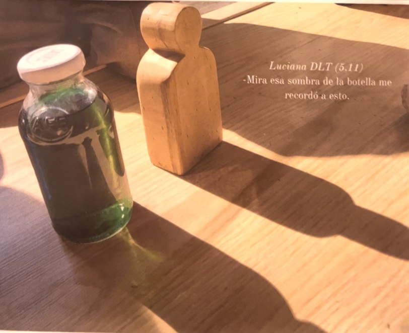
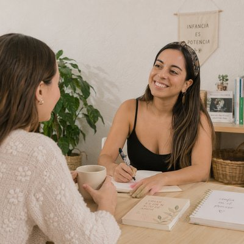

Tu Educadora Amiga
Inspiración Filosofía Reggio Emilia

Esto parece un caracol giganteGael, 5 años
Documentar el proceso
y el pensamiento

Jueves 5 · 18:00 hrs Chile · US$10
Quiero transformar mi miradaRegistrar es captar el pensamiento del niño/a. Documentar es elegir qué hacer visible del proceso vivido, para compartirlo con la infancia, con las familias, con tu equipo y contigo, y seguir reflexionando.
Veremos ejemplos de documentación de mi viaje a Reggio Emilia y de mi Playgroup: qué vale la pena registrar, cómo hacer visible el pensamiento de los niños y niñas, qué formatos puedes utilizar y cuándo elegir cada uno. Ejemplos reales, para ayudarte a transformar tu mirada.
Es para ti si…
- Ya registras, pero te cuesta dar el paso a documentar.
- Quieres seguir practicando y profundizando en la documentación.
- Quieres mostrar cómo piensan los niños y niñas, no solo lo que hicieron.
- Te inspira Reggio Emilia, aunque tu centro no lo sea.
No es para ti si…
- No quieres equivocarte. Porque spoiler: esto es ensayo y error para seguir transformando la mirada.
- Masterclass en vivo, con espacio al final para las preguntas que queden
- La grabación, para verla cuando quieras
- Sorteo en directo de un año de membresía Estándar en Atelier Reggio
Jueves 5 de noviembre · 18:00 hrs Chile
1 hora y media, en vivo por Zoom
US$10. Queda grabada y te la llevas.
Trece años en sala, nueve capacitando equipos y una comunidad de más de 10 mil educadoras y familias.
Colombia, Perú y Ecuador 16:00 · México y Costa Rica 15:00 · España y Francia 22:00

No necesitas más cosas,
solo otra mirada.
Lo difícil de la filosofía Reggio Emilia no es entenderla: es llevarla a tu sala, con tu grupo, tus tiempos y tu espacio.
Aquí la filosofía se vuelve práctica: propuestas de investigación para cualquier día de la semana.
Adentro encuentras imprimibles para explorar con tu grupo, lo que probé durante trece años en mi sala y cursos que bajan cada concepto a lo que pasa en el aula. Sin recetas, y aunque tu centro no sea Reggio.
Lo que dicen educadoras del Atelier Reggio
“No pude estar en vivo, pero me tomé esta tarde de lluvia para ver la grabación (…). Me gustó la mirada de ver el registro como una forma de decirle a las infancias: te vi y tu pensamiento importa.”
Camila C.
“Hay tantas cosas que vemos día a día en el patio que pueden sentirse tan normales y rutinarias, que no recordamos la cantidad de aprendizajes (…) que existen solo al mirar por la ventana. Gracias por darnos un espacio y tiempo de reflexión.”
Victoria A.
“Me encanta la idea de hacer visible el mundo de los niños, y sus ideas. Registrar para conocerlos en profundidad sin duda hará que los niños sean muy seguros de sí mismos.”
Yaninna C.
 Entrar a la comunidad en Skool
Entrar a la comunidad en Skool
USD $15 al mes. Cancelas cuando quieras.


Reflexiones sobre la infancia, una carta por semana
Una carta a la semana sobre lo que veo en sala con mi equipo: lo que me hace pensar, lo que cuesta entender, lo que probamos, lo que resultó y lo que no. Sin recetas y sin tareas.
Al suscribirte te llevas Observar antes de intervenir, una guía de siete páginas sobre lo que pasa cuando ayudamos antes de que nos pidan ayuda.

Quién te acompaña
Soy Dani Meniconi, Educadora Infantil y Atelierista inspirada en la filosofía Reggio Emilia. El 2018 fundé Bianca Stella Playgroup, un centro inspirado con el mismo enfoque. Desde entonces acompaño con la pedagogía de la escucha a mi equipo, sus niños y sus familias.